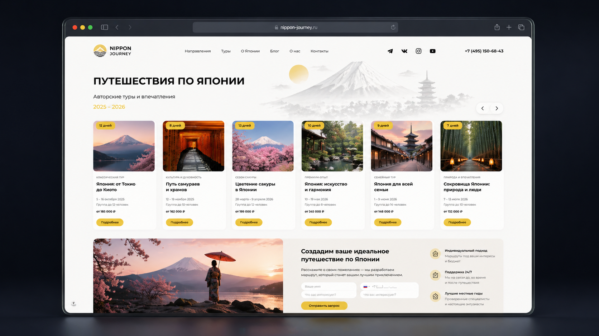
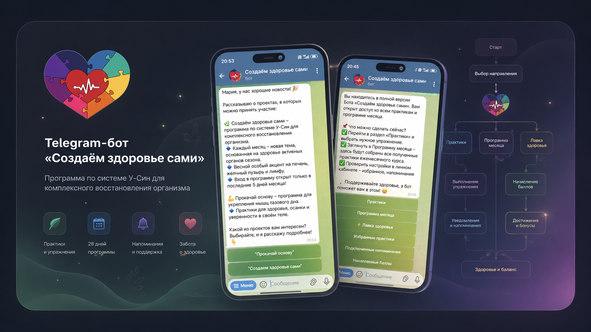
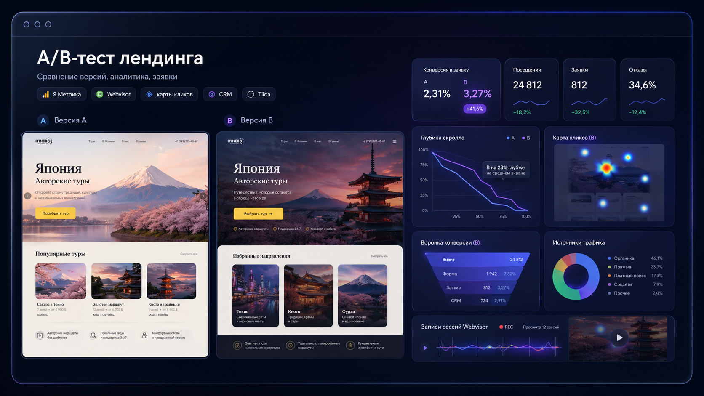

Избранные кейсы
В кейсах я показываю не просто инструменты, а задачи: где нужно было доработать страницу, собрать бота, выстроить продуктовую логику, настроить аналитику или связать несколько элементов вокруг продукта.

Travel-проект на Tilda
24+ месяца поддержкиВерстка, адаптив, формы, передача заявок в CRM, UTM, A/B-тесты, email-рассылки, DNS и Google Workspace.
Смотреть кейс
Инфраструктура эксперта в нише здоровья
Клуб + боты + LTVАвтоматизированные программы, оплаты, доступы, рассылки, напоминания, метрики и возвратные касания.
Смотреть кейс
Telegram-бот «ОПОРА»
Сценарная архитектураПредпроектный анализ, сценарии, ветвления, напоминания, тестирование и запуск Telegram-бота для экспертного проекта.
Смотреть кейс
A/B-тест лендинга
Travel-направлениеПодготовка двух версий, цели, формы, сверка заявок, Вебвизор, карты кликов и скролла, выводы по поведению и заявкам.
Смотреть кейс